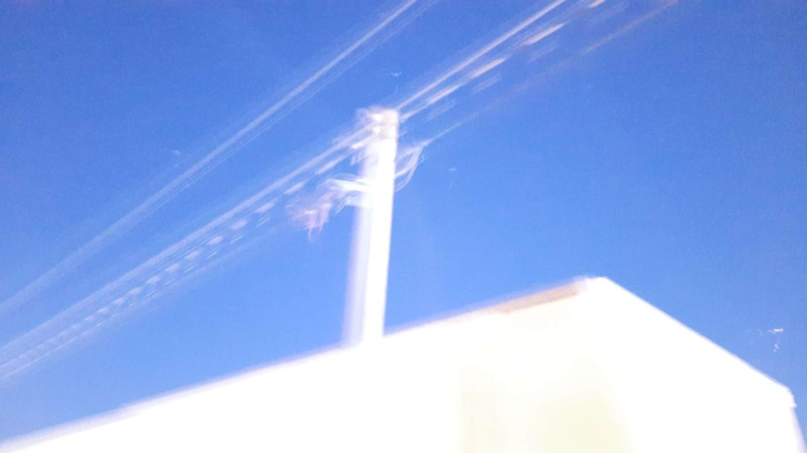
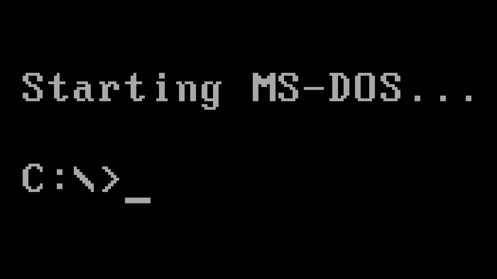

Today was a very special day for me for several reasons. My dad had a rough day yesterday so this morning I went down to starbucks and got him his favorite drink. On the cup I wrote "Thanks for being a great dad" and it really cheered him up and zoomed him into oblivion energy wise. HAHAHHAA. The power of caffeine and love :)
While my dad was down, someone close to me was stuck emotionally, and someone else was sad that I previously dated, I made a song venting in under an hour called "You'll Get There". I'm very proud of it and for being composed in under 15 minutes I'm damn proud. I did an album cover and posted it on Bandcamp + Newgrounds then slept. When I woke up I saw that it got front page on Newgrounds???
8 downloads, 4.5/5 and 500+ listens is crazy to me and I'm so thankful for it. It gives me such hope of posting my stuff online! :') Much more where that came from!!!
You can listen to the song I made over on Bandcamp as well as Newgrounds under the same name!
April 24th, 2023
SNES Drum MIDI Transcription? (Gemfire)
With an interest in making drum midi that sounds realistic and nice to use for projects, of course my first thought like any normal person was to look under obscure retro games that I've never heard of! In this case I went with a game I've never heard of, but has high reviews, called Gemfire.
First on the chopping block is to yknow. Um. Play the game I'm going to be transcribing. So...Here goes nothing! My first playthrough impressions of Gemfire.
Wow I didn't know that would be a strategy game. I hate strategy games so much. I was expecting an RPG game by the looks of it from a glance! Strategy games really overwhelm me...really not my thing. I tried 10 minutes of it and was miserable the whole time trying to understand what the hell I was doing. Defend, attack, buy, cultivate, ehhhh. Not my thing, glad it's other peoples though! The soundtrack on the other hand was pretty good! It was a nice feeling to listen to on its own and is worthy of a listen.
I started mapping out the tempo of the first drum groove I heard. Tapped it out, implemented it, and quickly started riffing on it instead of recreating it 1 to 1. There's a reason why this website is called lines of thought and not perfect replicaa dot net...But yeah! I created 2 variations of the same pattern, looped it, played around with the drum kit sound and...I wanted to put some delay on it, casually. But oh boy...I didn't do it casually!
Ya see, earlier on in the day I was looking at a video on this guys tape loop he set up at the beach that he ran until it ran out of batteries. All you heard was this wash over time of the slowing down of the tape machine, the distortion becoming more hazy and focal...It was gorgeous. Very inspiring stuff. I'll link it below so you can give it a watch :)
So I quickly after putting just a 'tad' of delay on it, thought back to that, and implemented a wacky delay patch. Except I didnt wanna automate it by hand but instead wanted to live perform it soooo!!! I hit save live output to disk (bounce) in reaper to record my session. Did about 8 - 9 minutes of improv with just a delay plugin called deelay which is free and very wonderful for reverb, delay, reverse My Bloody Valentine effects :p
After I improvised, I uploaded it to my Newgrounds page with this art work I did for it:
That was my lines of thought journey for the day even while feverish and sick! SNES Gemfire Drum Transcription -> Delay Tape Loop Ambient. I hope you enjoy it, feel free to reach out, and godspeed :)
Listen Below:
April 22nd, 2023
Feverish
Feeling very under the weather randomly throughout the day. For 20 minutes I'm fine, the other 40 I'm sniffling and burning up. 2 hours I'm okay, the other 3 I'm brain dead. I slept for what ended up being about 18 hours and I'm still exhausted. Must be my body trying to replenish and fight this off. Most likely seasonal allergen. Even typing this I'm sniffling something awful. But hey atleast Mac Demarco dropped a 9 hour long demo album that is a masterpiece. Really feeling it and so so proud of him.
Productivity wise it's been pretty sparse the past 2 days. Only getting a chance to do a demo or 2 musically, doing some guitar playing, but the main thing has been music listening and reframing mentally. Sometimes the most productive you can be in your current state is listening/absorbing new inspiration & material and talking to people. I met a really nice person who shares similar music tastes but different artists and it's been a lovely little experience of ours! Meeting people makes me happy, and new music makes me happy. I'm grateful that while I'm sick I have these simple pleasures. Enjoy your simple pleasures today :)
P.S. I feel very happy I made this site ❤
April 22nd, 2023
Expiry Date Drumkit Released! (Decent Sampler)

Inspired by the works of Death Grips and Noisy Lofi Rock Bands, I created a lil kit just for the occasion~
I was given the task of composing an ethereal chamber folk song for a game jam game! My good friend kathinka hired me to do a loop for it and I couldn't have been more happy to do music for her. Apparently I knocked it out of the park, I'm proud of it, and it helped me gain so much confidence in my work hearing how it was perfect for the project...Simply beautiful. Absolutely am going to do more work like this!
April 19th, 2023
Hello World! :D

This is my space of the internet where I post stuff! Testing, mic check check check